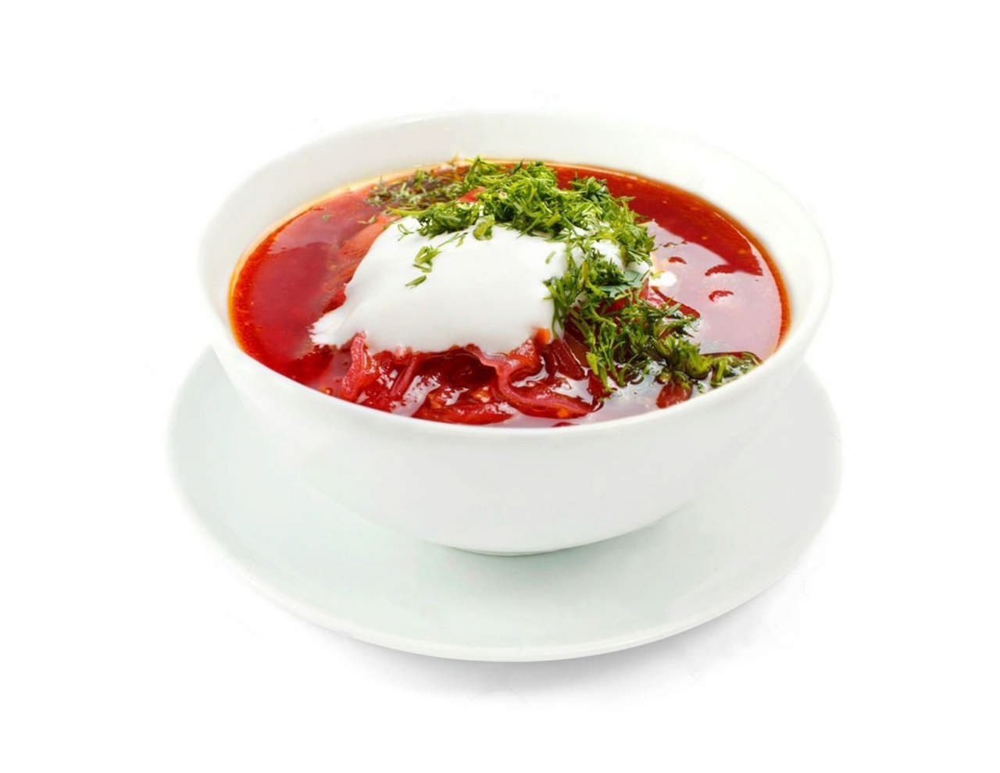

Ingredients
- Beets – 2 pcs
- Potatoes – 3 pcs
- Cabbage – 200 g
- Carrot – 1 pc
- Beef broth – 1 L
- Tomato paste – 2 tbsp
- Garlic, salt, pepper – to taste
Instructions
- Boil beef broth with potatoes.
- Fry beets, carrots, and onions with tomato paste.
- Add everything to broth and simmer 15–20 minutes.
- Serve with sour cream and dill.